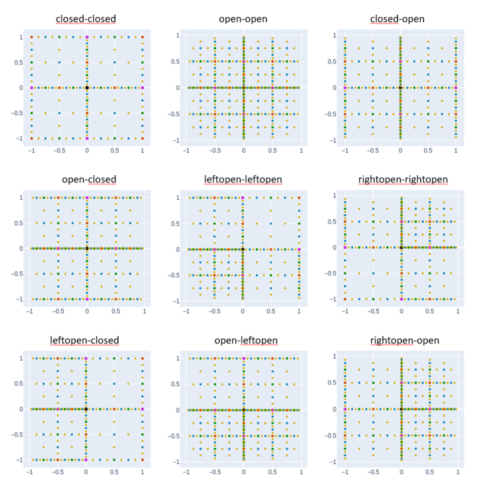
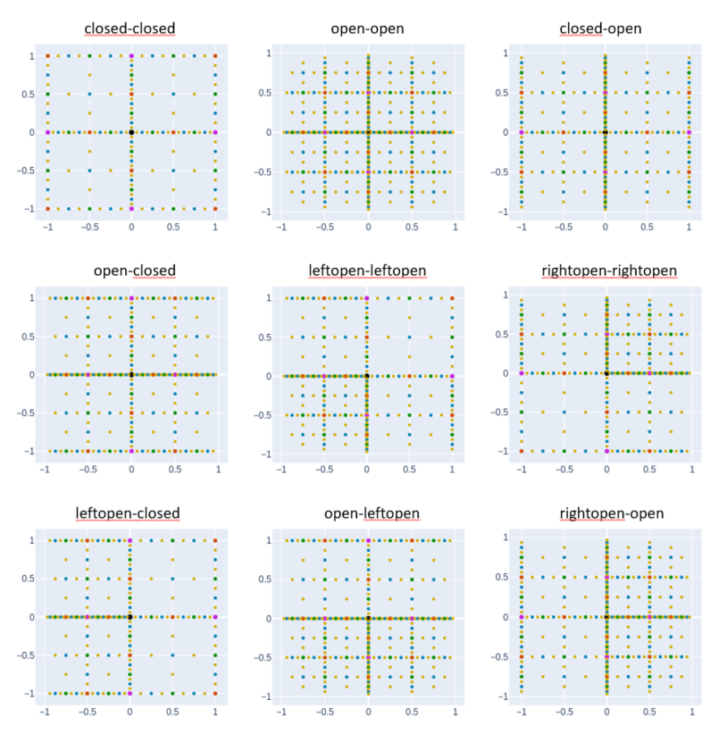

DistributedSparseGrids.jl
A Julia library that implements an Adaptive Sparse Grid collocation method for integrating memory-heavy objects generated on distributed workers (link to GitHub repository).
For an alternative implementation, see AdaptiveSparseGrids.jl.
Contents
Introduction
To mitigate the "curse of dimensionality" that occurs in the integration or interpolation of high-dimensional functions using tensor-product discretizations, sparse grids use Smolyak's quadrature rule. This is particularly useful if the evaluation of the underlying function is costly. In this library, an Adaptive Sparse Grid Collocation method with a local hierarchical Lagrangian basis, first proposed by Ma and Zabaras (2010), is implemented. For more information about the construction of Sparse Grids, see e.g. Gates and Bittens (2015).
Install
import Pkg
Pkg.install("DistributedSparseGrids")Implemented features
- Nested one-dimensional Clenshaw-Curtis rule
- Smolyak's sparse grid construction
- local hierarchical Lagrangian basis
- different pointsets (open, closed, halfopen)
- adaptive refinement
- distributed function evaluation with Distributed.remotecall_fetch
- multi-threaded calculation of basis coefficients with Threads.@threads
- usage of arbitrary return types
- integration
- experimental: integration over $X_{\sim (i)}$ (the $X_{\sim (i)}$ notation indicates the set of all variables except $X_{i}$).
Usage
Point sets
When using sparse grids, one can choose whether the $2d$ second-level collocation points should lay on the boundary of the domain or in the middle between the origin and the boundary. (There are other choices as well.) This results in two different sparse grids, the former with almost all points on the boundary and on the coordinate axes, the latter with all points in the interior of the domain. Since one can choose for both one-dimensional children of the root point individually, there exist a multitude of different point sets for Sparse Grids.
DistributedSparseGrids
using StaticArrays
function sparse_grid(N::Int,pointpros,nlevel=6,RT=Float64,CT=Float64)
# define collocation point
CPType = CollocationPoint{N,CT}
# define hierarchical collocation point
HCPType = HierarchicalCollocationPoint{N,CPType,RT}
# init grid
asg = init(AHSG{N,HCPType},pointpros)
#set of all collocation points
cpts = Set{HierarchicalCollocationPoint{N,CPType,RT}}(collect(asg))
# fully refine grid nlevel-1 times
for i = 1:nlevel-1
union!(cpts,generate_next_level!(asg))
end
return asg
end
# define point properties
# 1->closed point set
# 2->open point set
# 3->left-open point set
# 4->right-open point set
asg01 = sparse_grid(1, @SVector [1])
asg02 = sparse_grid(1, @SVector [2])
asg03 = sparse_grid(1, @SVector [3])
asg04 = sparse_grid(2, @SVector [1,1])
asg05 = sparse_grid(2, @SVector [2,2])
asg06 = sparse_grid(2, @SVector [1,2])
asg07 = sparse_grid(2, @SVector [2,1])
asg08 = sparse_grid(2, @SVector [3,3])
asg09 = sparse_grid(2, @SVector [4,4])
asg10 = sparse_grid(2, @SVector [3,1])
asg11 = sparse_grid(2, @SVector [2,3])
asg12 = sparse_grid(2, @SVector [4,2])  

Integration and Interpolation
asg = sparse_grid(4, @SVector [1,1,1,1])
#define function: input are the coordinates x::SVector{N,CT} and an unique id ID::String (e.g. "1_1_1_1")
fun1(x::SVector{N,CT},ID::String) = sum(x.^2)
# initialize weights
@time init_weights!(asg, fun1)
# integration
integrate(asg)
# interpolation
x = rand(4)*2.0 .- 1.0
val = interpolate(asg,x) Distributed function evaluation
asg = sparse_grid(4, @SVector [1,1,1,1])
# add worker and register function to all workers
using Distributed
addprocs(2)
ar_worker = workers()
@everywhere begin
using StaticArrays
fun2(x::SVector{4,Float64},ID::String) = 1.0
end
# Evaluate the function on 2 workers
distributed_init_weights!(asg, fun2, ar_worker)Using custom return types
For custom return type T to work, following functions have to be implemented
import Base: +,-,*,/,^,zero,zeros,one,ones,copy,deepcopy
+(a::T, b::T)
+(a::T, b::Float64)
*(a::T, b::Float64)
-(a::T, b::Matrix{Float64})
-(a::T, b::Float64)
zero(a::T)
zeros(a::T)
one(a::T)
one(a::T)
copy(a::T)
deepcopy(a::T)This is already the case for many data types. Below RT=Matrix{Float64} is used.
# sparse grid with 5 dimensions and levels
pointpros = @SVector [1,2,3,4,1]
asg = sparse_grid(5, pointpros, 6, Matrix{Float64})
# define function: input are the coordinates x::SVector{N,CT} and an unique id ID::String (e.g. "1_1_1_1_1_1_1_1_1_1"
# for the root poin in five dimensions)
fun3(x::SVector{N,CT},ID::String) = ones(100,100).*x[1]
# initialize weights
@time init_weights!(asg, fun3)In-place operations
There are many mathematical operations executed which allocate memory while evaluating the hierarchical interpolator. Many of these allocations can be avoided by additionally implementing the in-place operations interface for data type T. At the moment, this feature is provided through the interface package AltInplaceOpsInterface.jl and LinearAlgebra.mul! (the code was initially written for Julia 0.6). In future releases, this interface could be rendered obsolete due to implementing standard julia interface function and proper broadcasting, but some research is probably still needed to implement this properly.
import LinearAlgebra
import LinearAlgebra: mul!
import AltInplaceOpsInterface
AltInplaceOpsInterface.add!(a::T, b::T)
AltInplaceOpsInterface.add!(a::T, b::Float64)
AltInplaceOpsInterface.minus!(a::T, b::T)
AltInplaceOpsInterface.minus!(a::T, b::Float64)
AltInplaceOpsInterface.pow!(a::T, b::Float64)
LinearAlgebra.mul!(a::T, b::Float64)
LinearAlgebra.mul!(a:T, b::T, c::Float64)For Matrix{Float64} this interface is already implemented.
# initialize weights
@time init_weights_inplace_ops!(asg, fun3)Distributed function evaluation and in-place operations
# initialize weights
@time distributed_init_weights_inplace_ops!(asg, fun3, ar_worker)Adaptive Refinement
# Sparse Grid with 4 initial levels
pp = @SVector [1,1]
asg = sparse_grid(2, pp, 4)
# Function with curved singularity
fun1(x::SVector{2,Float64},ID::String) = (1.0-exp(-1.0*(abs(2.0 - (x[1]-1.0)^2.0 - (x[2]-1.0)^2.0) +0.01)))/(abs(2-(x[1]-1.0)^2.0-(x[2]-1.0)^2.0)+0.01)
init_weights!(asg, fun1)
# adaptive refine
for i = 1:20
# call generate_next_level! with tol=1e-5 and maxlevels=20
cpts = generate_next_level!(asg, 1e-5, 20)
init_weights!(asg, collect(cpts), fun1)
end
# plot
import PlotlyJS
surfplot = PlotlyJS.surface(asg, 100)
gridplot = PlotlyJS.scatter3d(asg)
PlotlyJS.plot([surfplot, gridplot])
Plotting
1d
# grid plots
PlotlyJS.scatter(sg::AbstractHierarchicalSparseGrid{1,HCP}, lvl_offset::Bool=false; kwargs...)
UnicodePlots.scatterplot(sg::AbstractHierarchicalSparseGrid{1,HCP}, lvl_offset::Bool=false)
# response function plots
UnicodePlots.lineplot(asg::AbstractHierarchicalSparseGrid{1,HCP}, npts = 1000, stoplevel::Int=numlevels(asg))
PlotlyJS.surface(asg::SG, npts = 1000, stoplevel::Int=numlevels(asg); kwargs...)2d
# grid plots
PlotlyJS.scatter(sg::AbstractHierarchicalSparseGrid{2,HCP}, lvl_offset::Float64=0.0, color_order::Bool=false)
UnicodePlots.scatterplot(sg::AbstractHierarchicalSparseGrid{2,HCP})
PlotlyJS.scatter3d(sg::AbstractHierarchicalSparseGrid{2,HCP}, color_order::Bool=false, maxp::Int=1)
# response function plot
PlotlyJS.surface(asg::AbstractHierarchicalSparseGrid{2,HCP}, npts = 20; kwargs...)3d
# grid plot
PlotlyJS.scatter3d(sg::AbstractHierarchicalSparseGrid{3,HCP}, color_order::Bool=false, maxp::Int=1)Contributions, report bugs and support
Contributions to or questions about this project are welcome. Feel free to create a issue or a pull request on GitHub.